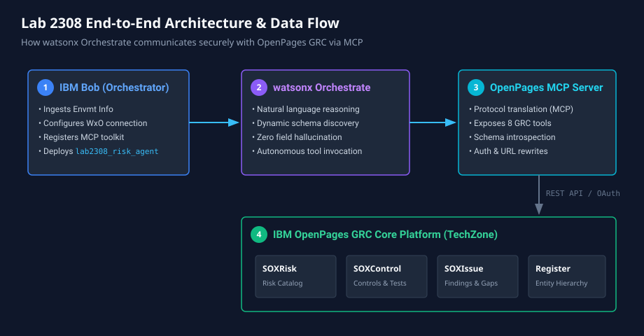
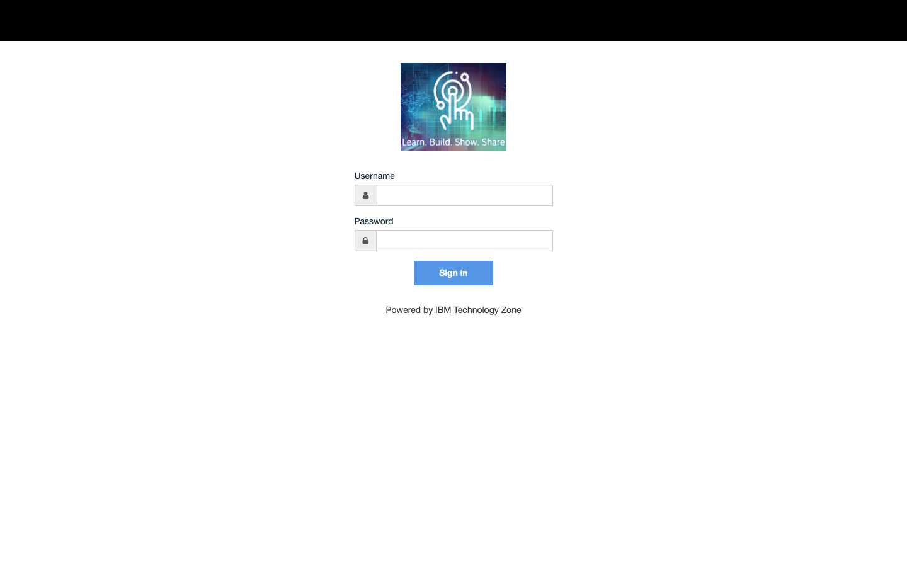
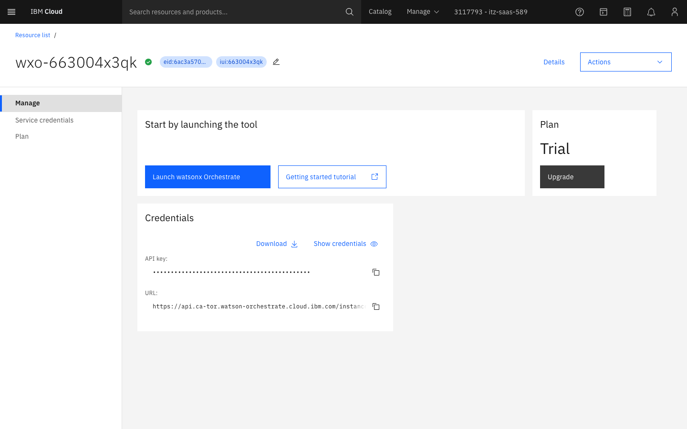
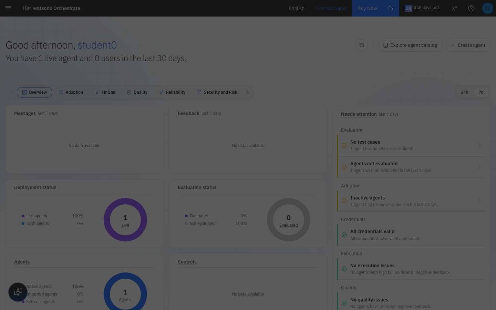
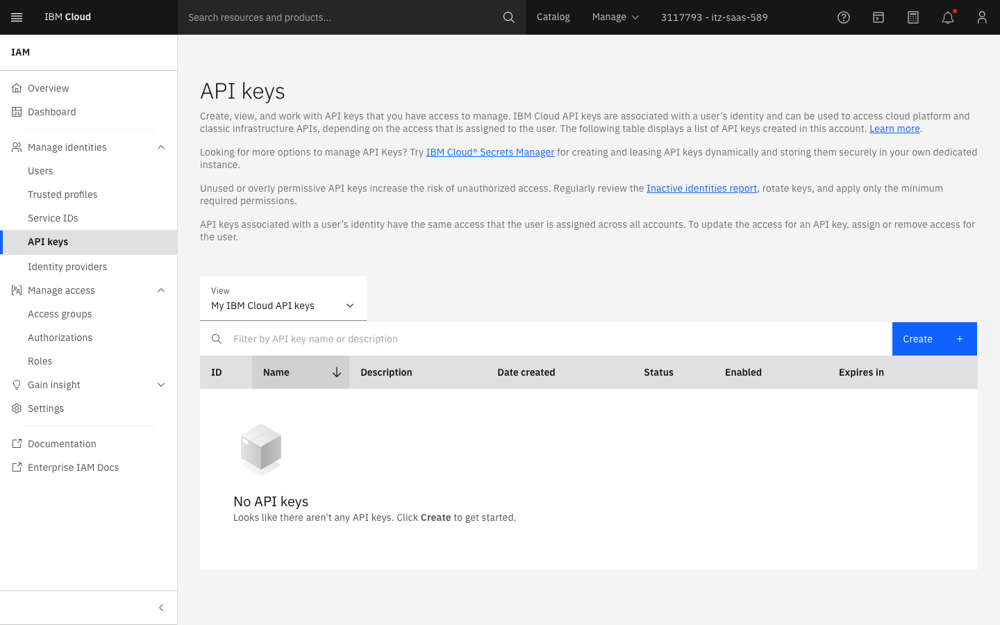
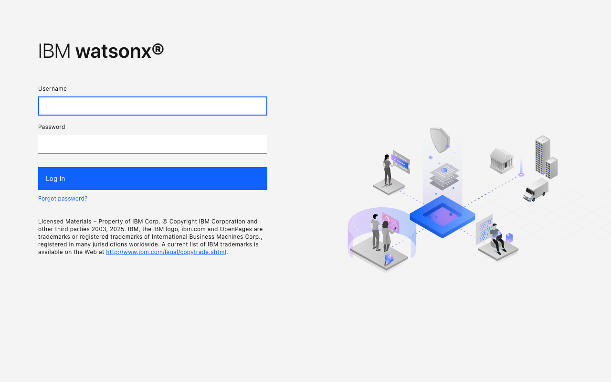
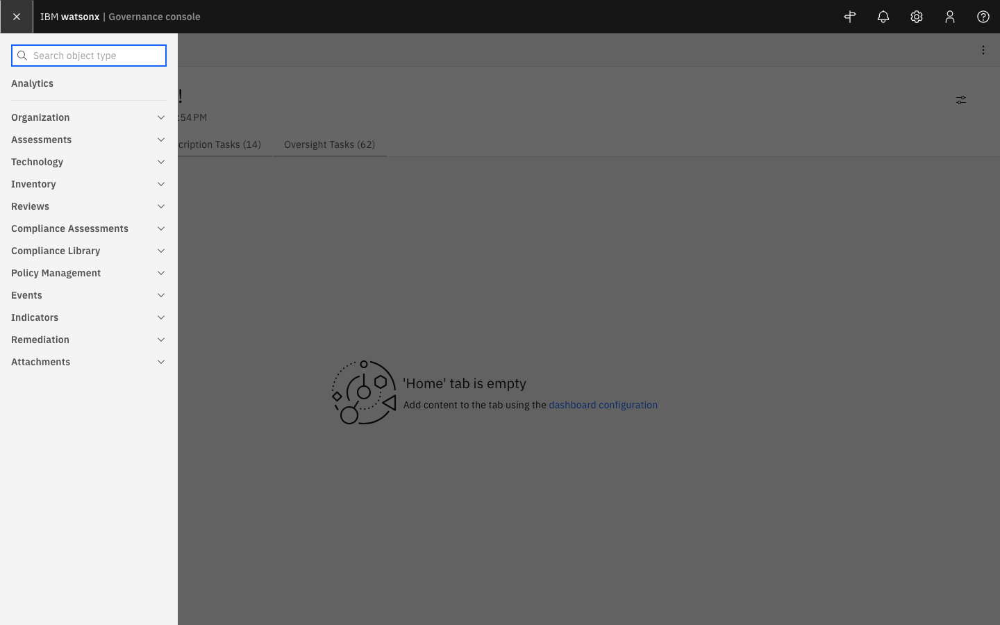
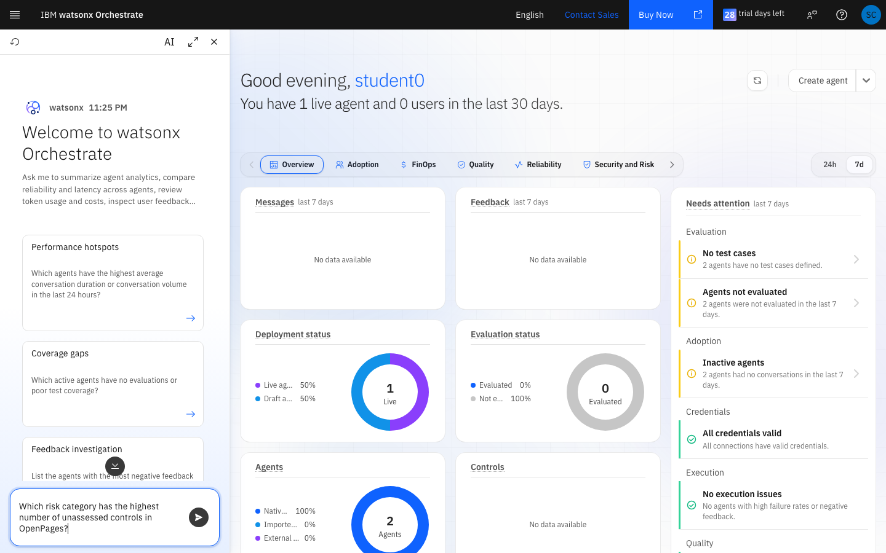
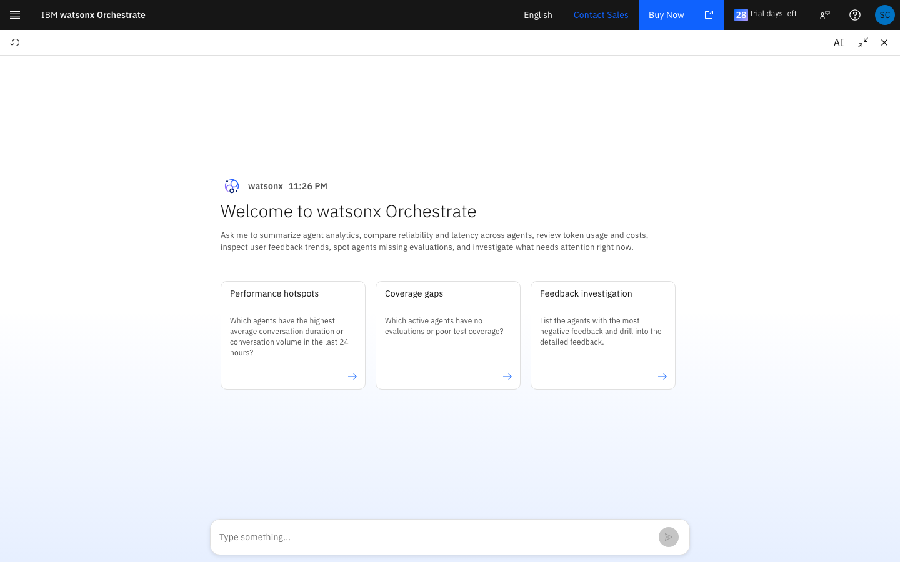

Introduction & Lab Objectives
GRC (Governance, Risk, and Compliance) teams spend countless hours reading siloed dashboards, chasing risk owners, and manually reconciling spreadsheets. What if an autonomous AI agent could answer questions about your organization's risk posture — in plain English — by communicating directly with your live GRC platform?
In this lab, you will interact with an autonomous AI risk agent powered by IBM watsonx Orchestrate that connects to IBM OpenPages (watsonx.governance) through the Model Context Protocol (MCP).
You do not need to write complex integration code or debug manual APIs. IBM Bob handles the scaffolding behind the scenes, allowing you to focus on testing agentic reasoning, schema introspection, and compliance validation.
Key Terms & Concepts
| Component | Description & Role in this Lab |
|---|---|
| IBM OpenPages | IBM's comprehensive GRC platform for managing operational risk, controls (SOXControl), risks (SOXRisk), and compliance frameworks. |
| watsonx Orchestrate (WxO) | Agentic AI platform that reasons over natural language prompts, dynamically selects tools, and executes multi-step workflows. |
| Model Context Protocol (MCP) | The open standard protocol bridging LLMs to external tools and data sources with dynamic schema discovery and bi-directional object manipulation. |
| IBM Bob | Your AI pair programmer that wires up the WxO instance, registers the OpenPages MCP toolkit, and imports the agent configuration. |
What You Will Accomplish
- Understand MCP in Enterprise GRC: Discover how open protocols unlock real-time tool calling without fragile custom integrations.
- Witness Schema-First Agent Execution: Observe why the agent never hallucinates field names by reading OpenPages object schemas at runtime.
- Execute Real Risk Workflows: Identify compliance gaps, unassessed controls, and log new risk associations through natural language prompts.
- Inspect Live Execution Telemetry: Examine the real-time execution spans, SQL-style queries, and LLM reasoning steps.
Architecture Overview
The diagram below illustrates the end-to-end data flow: from user prompts in the watsonx Orchestrate interface, through the LLM reasoning loop and MCP server, to the live OpenPages GRC repository.

Interactive Request Lifecycle
- User Prompt: The user submits an operational question (e.g., "Which risk category has unassessed controls?").
- Schema Introspection: The agent calls
openpages_get_resourceto inspect the live schema definition (e.g.openpages://schema/SOXControl). - Verified Query Generation: The agent crafts an exact SQL query matching the introspected field names (
OPSS-Ctl:Status). - Data Execution: The OpenPages MCP server executes the query against OpenPages REST endpoints and returns structured JSON rows.
- Synthesized Response: The agent formats a clean, clickable Markdown response with live links back to the OpenPages task view.
Your Lab Environments & Credentials Walkthrough
Follow the step-by-step instructions below to access your provisioned IBM Cloud reservation, launch watsonx Orchestrate, and log into OpenPages GRC.
3.1 Environment Credentials Reference Table
Refer to your reservation handout for your specific credentials:
| Resource / Parameter | Format / Placeholder Pattern | Purpose |
|---|---|---|
| IBM Cloud Authorize URL | https://cloud.ibm.com/authorize/<tenant_id>/<slug> | Direct App ID authentication gateway |
| App ID Student User | student<N>@<tenant_id>.techzone.com | Assigned student login username |
| App ID Password | ••••••••••••••• | Student password from handout |
| Resource Group | eid-<tenant_id> | Target resource group in IBM Cloud |
| Service ID API Key | <alphanumeric_api_key> | API key given to Bob to configure Orchestrate |
| OpenPages Application URL | https://wxgov-govconsole-demo-<res_id>.vsi.techzone.ibm.com/openpages | GRC Web UI for inspecting risks |
| OpenPages MCP Server URL | https://wxgov-govconsole-demo-<res_id>.vsi.techzone.ibm.com/mcp | OpenPages URL with /openpages replaced by /mcp |
| OpenPages Login | Ask your lab instructors for credentials | GRC administrative login |
3.2 Step 1: Log In to IBM Cloud via TechZone App ID
Open a Private / Incognito browser window and navigate to your App ID Cloud Directory URL. Enter your student credentials and click Sign in.

3.3 Step 2: Access Your Resources & Launch watsonx Orchestrate
In IBM Cloud, navigate to Resource List (cloud.ibm.com/resources). Under the AI / Machine learning section, click your provisioned watsonx-orchestrate service instance.

Click the blue Launch watsonx Orchestrate button to open your live Orchestrate Control Plane dashboard:

3.4 Step 3: Locating Your Service ID API Key for Bob
Your reservation comes provisioned with a dedicated Service ID API key. You can view and manage API keys under Manage → Access (IAM) → API keys or Service IDs in IBM Cloud.

3.5 Step 4: Accessing & Logging In to OpenPages (watsonx.governance)
Open your OpenPages Application URL in a new browser tab. When prompted with the browser self-signed TLS warning ("Your connection is not private"), click Advanced → Proceed to wxgov-govconsole... (unsafe).

Your MCP server endpoint is simply your OpenPages Application URL with /openpages replaced by /mcp:
Application URL: https://wxgov-govconsole-demo-<res_id>.vsi.techzone.ibm.com/openpages MCP Server URL: https://wxgov-govconsole-demo-<res_id>.vsi.techzone.ibm.com/mcp
Module 1 — Start Here: Talk to Bob
Now you will have a short conversation with IBM Bob. You share your environment details, and Bob automatically registers the OpenPages MCP toolkit and imports your risk agent.
4.1 Open IBM Bob
Open IBM Bob in your browser or local workspace.
4.2 Prompt Bob to Set Everything Up
Prompt Bob
"Hi Bob! I'm in Lab 2308 at TechXchange. Can you set me up?"
Bob will greet you and ask for three items — provide them when prompted:
- Your OpenPages MCP endpoint URL (e.g.
https://wxgov-govconsole-demo-<res_id>.vsi.techzone.ibm.com/mcp) - Your watsonx Orchestrate API key (Service ID key from your handout)
- Your WxO instance URL (Confirm the default shared instance)
Bob will silently wire up the MCP toolkit, configure the endpoints, and import lab2308_risk_agent into your Orchestrate instance. Once Bob announces "🎉 You're all set!", proceed to Module 2.
Module 2 — Explore OpenPages GRC
Before chatting with the agent, spend a couple minutes exploring the source system it will be querying.
5.1 Log In to OpenPages
Open your OpenPages Application URL in your browser and log in with the credentials provided by your instructor.
5.2 Navigate the Risk Register

- Click the top-left Navigation Menu (hamburger icon).
- Locate the Risk register under Assessments.
- Notice the Resource ID format (e.g.
I01-RSK-01-01or numeric21011). - Observe how fields use strict schema prefixes (
OPSS-Rsk:Status,OPSS-Rsk:RiskLevel). Your agent queries these schemas directly.
Module 3 — Chat With Your Risk Agent
Now test your live agent inside watsonx Orchestrate!
6.1 Open the Agent in watsonx Orchestrate
In your watsonx Orchestrate workspace, click the AI Assistant launcher icon in the bottom-left corner of the screen. The interactive chat drawer opens on the right:

6.2 Guided Test Prompts: The Compliance Scenario
You are a risk analyst at a financial institution. Every control in this environment is sitting at "Awaiting Assessment". Your job is to find the gap, log the risk, and link the control.
Prompt 1 — Find the Compliance Gap
Prompt 1
"Which of our risk categories have controls that are still awaiting assessment?"
Expected behavior: The agent calls openpages_get_resource to inspect the SOXControl schema, executes a query for controls with status Awaiting Assessment, groups them by OPSS-Shared-Basel:Risk Category, and highlights External Fraud as the most exposed category.
Prompt 2 — Drill Down on High-Exposure Categories
Prompt 2
"Show me the controls for External Fraud."
Expected behavior: The agent queries controls where OPSS-Shared-Basel:Risk Category = 'External Fraud', returning names, IDs (e.g. CTL-04-03-03-01), and descriptions.
Prompt 3 — Create a New Risk Record in OpenPages
Prompt 3
"Log a new risk in OpenPages: Name it 'Inadequate Fraud Detection Controls', set the category to External Fraud, and note that controls are unassessed."
Expected behavior: The agent finds a parent process (e.g. Retail Banking), calls openpages_upsert_object with object_type: "soxrisk", and returns the newly assigned numeric Resource ID with a direct clickable link into OpenPages.
Prompt 4 — Associate the Control to the New Risk
Prompt 4
"Link control CTL-04-03-03-01 to our new Inadequate Fraud Detection Controls risk."
Expected behavior: The agent resolves the control ID, invokes openpages_associate_objects, and confirms the bidirectional relationship.
6.3 What the Agent Is Doing (Schema-First Pattern)
Every response follows this robust execution sequence:
User Prompt
│
▼
1. openpages_get_resource("openpages://catalog/object_types") ← Discover types
│
▼
2. openpages_get_resource("openpages://schema/SOXRisk") ← Introspect valid fields
│
▼
3. execute_openpages_query(SELECT confirmed_fields FROM...) ← Query with verified fields
│
▼
4. Rewrite internal opapp URLs to external TechZone hostname ← Format links
│
▼
5. Synthesize and format Markdown response
Module 4 — Inspect Live Telemetry & Execution Traces
Observing why an AI agent made a decision and how it retrieved external data is critical for enterprise governance and compliance.
7.1 Open the Telemetry & Context Inspector
In the watsonx Orchestrate chat header, click the Maximize Chat or AI / Info button to expand the full execution view:

7.2 Anatomy of an MCP Execution Trace
| Span Type | Component | What It Reveals in the Trace |
|---|---|---|
| TOOL (Schema Discovery) | openpages_get_resource | The exact URI (openpages://schema/SOXControl) introspecting valid fields prior to query generation. |
| TOOL (Data Query) | execute_openpages_query | The SQL query payload, execution latency (ms), HTTP 200 response, and row count. |
| TOOL (Write / Association) | openpages_upsert_object | The JSON mutation payload sent to OpenPages and the returned primary resource_id. |
| LLM SPAN (Reasoning) | llama-3-3-70b-instruct | ReAct reasoning steps, token counts, inference latency, and output formatting. |
7.3 Try Your Own Prompts & Watch the Traces
Try sending these additional queries to observe the trace inspector in real time:
Test Prompt A
"How many risks are currently in an Open status?"
Test Prompt B
"List all risks that are High severity."
Test Prompt C
"Summarise the risk landscape — how many risks exist per status?"
Troubleshooting & FAQs
If something behaves unexpectedly during the lab, simply ask Bob for help. Bob can inspect and repair connections automatically:
| Symptom | What to tell Bob |
|---|---|
| Agent says "I don't have access to that tool" | "Bob, my agent says it can't find the MCP tools. Can you re-register the toolkit?" |
| Tool calls time out | "Bob, the agent is timing out. Can you check the OpenPages endpoint?" |
| Authentication / 401 error | "Bob, I'm getting an authentication error. Can you refresh the connection?" |
| Empty risk list returned | "Bob, the agent returned an empty list. My OpenPages URL is <paste URL>." |
Wrap-Up & Key Takeaways
✅ Built an autonomous AI risk agent connected to IBM OpenPages via Model Context Protocol (MCP).
✅ Eliminated field hallucination through dynamic schema-first introspection.
✅ Executed natural language queries, risk creation, and control association against live GRC databases.
✅ Inspected full telemetry traces and execution spans in watsonx Orchestrate.
Reference & MCP Tool Specifications
| MCP Tool Name | Function & Description |
|---|---|
execute_openpages_query | Executes SQL-style filter queries against OpenPages object tables. |
openpages_get_resource | Fetches live object schema definitions (e.g. openpages://schema/SOXRisk). |
openpages_list_resources | Lists available schema resources and catalog endpoints. |
openpages_upsert_object | Creates or updates GRC objects (Risks, Controls, Issues). |
openpages_associate_objects | Establishes parent-child or association links between GRC records. |
openpages_dissociate_objects | Removes association links between GRC records. |
echo | Connectivity and latency heartbeat test for the MCP server. |